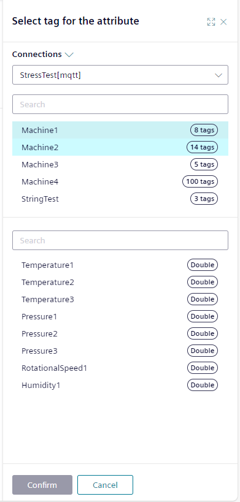
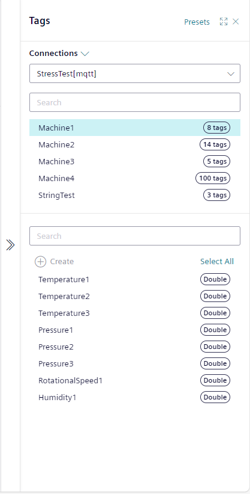
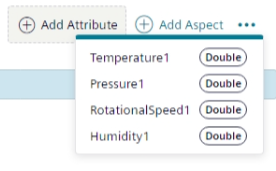
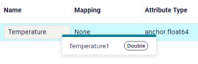
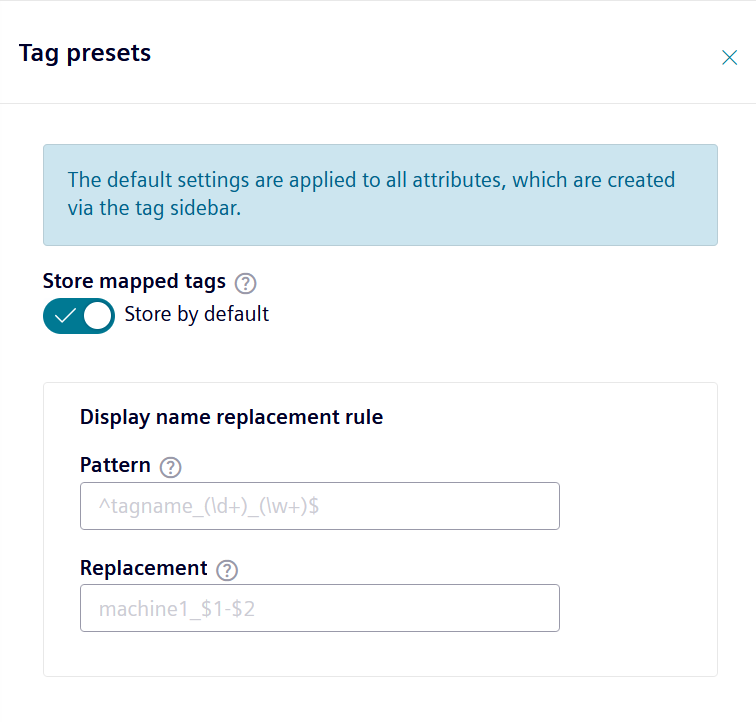
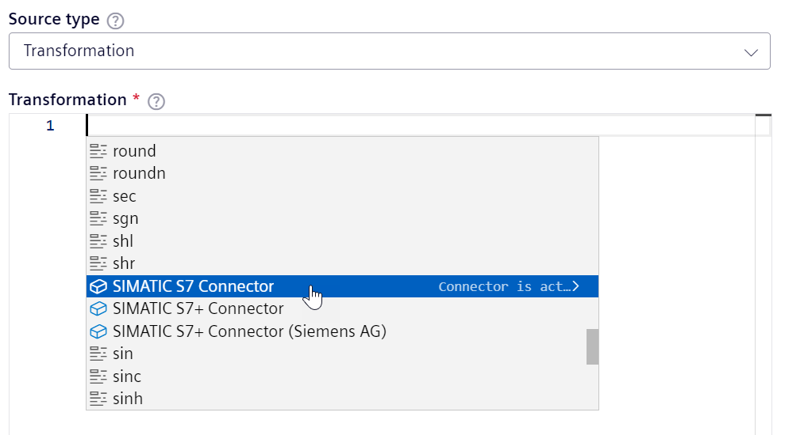
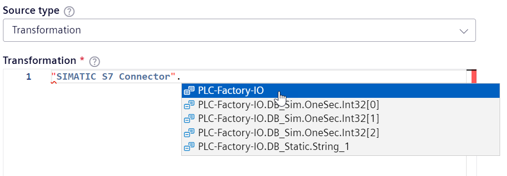
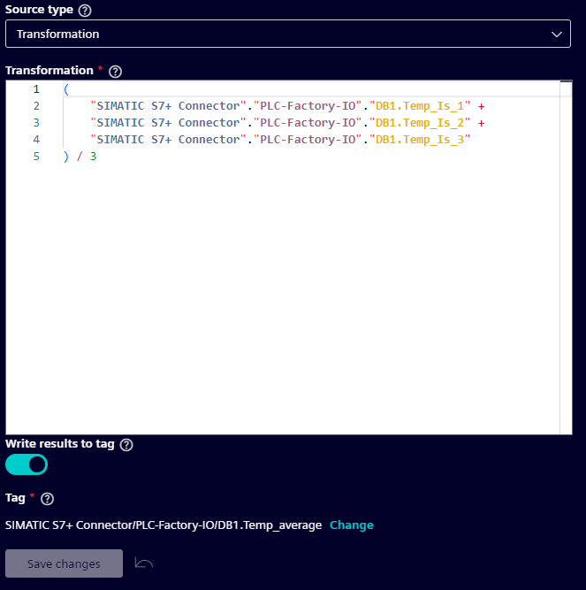

Connecting data to an attribute
In the IIH Essentials there are multiple ways to connect data to an attribute. The connection is configured in the "Attributes" tab in the "Manage Data" tab section.
Mapping tags to an attribute
Mapping a single tag
You can directly configure a mapped tag for an attribute in the add or edit attribute sidebar using the source options. To map a single tag to an attribute, select the "Source Type" connector and then choose the desired tag with a click on "Change". If you need to combine or modify data from multiple tags, use the "Source Type" transformation. For more information on transformations, see the section below.

Fast mapping via tag sidebar
For quick mapping, use the tag sidebar, which is available when no other sidebar is open. Expand it by clicking the icon on the right side. To find the desired tag, select a connected connector and browse its connections and tags. The second section in the sidebar displays the connection names and the number of tags for each. When you click on a connection, the last section will display the available tags.

Bulk-creating attributes from tags
You can either drag and drop the selected tags to the "Add Attribute" button or use the "Create" button at the top to create attributes from the selected tags. The tag information will determine the properties of the created attribute. You can also drag and drop tags onto an asset or aspect in the navigation sidebar to create attributes there. It is possible to select multiple tags and create them in the same way. There is also a "Select All" button at the top to select all tags of a connection.
To add all tags of a connection, you can drag and drop the entire connection to the "Add Attribute" button or to an asset or aspect in the navigation sidebar.

Mapping a tag to an attribute
You can drag and drop a selected tag onto an attribute to set it as its new source. This action sets the source type to connector and updates the mapped tag for that attribute. The data type is not changed.

Presets
When using the mapping sidebar, some settings are set to preset values to minimize the configuration effort. These presets affect all tags mapped through the mapping sidebar. They can be changed via the "Preset" button in the top right corner of the mapping sidebar.

-
Store mapped tags:
This preset controls, whether attributes are storing the data of the tag or not. If enabled, the attribute can be used in all features, like northbound sync, and client apps like Performance Insight. If disabled, only the mapping information is stored, through which other components and apps, e.g. IIH Semantics, can subscribe the data. -
Display name replacement rule:
Using this regex the attribute display name can be created out of original tag name, with the possibility to transform and e.g. replace unsupported characters.
Defining a transformation
Transformations can be used to manipulate or combine data from tags before they are stored in an attribute. This is done via a code editor where the transformation syntax is written.
The transformation syntax supports basic mathematical operations as well as more complex code blocks and functions. The editor includes syntax highlighting, syntax checking and autocomplete. It also browses connectors and shows the available tags, provided the connector is connected.
To use autocomplete, follow these steps:
- In an empty formula editor, press
Ctrl + Space. This opens a suggestion list, including all possible keywords and available connectors. - Select an entry by scrolling or using the arrow keys and confirm by pressing
Enter. - After a connector or connection, enter a dot ".".
This opens a suggestion list, including all available connections and tags. If the list was closed accidentally, it can be reopened by pressing
Ctrl + Space.
Suggestion list of empty editor:

Suggestion list of connector/connection:

Delayed execution
Depending on the mode of transport, the data may be delayed, and the arrival time will differ from the actual timestamp in the payload. To accommodate this, the transformation is executed with a 10-second delay so that delayed data is still included.
Transformation details
A transformation can consist of the following elements:
-
Tags from a data source
A data source has the following structure:
Connector.ConnectionName.TagName. If a Connector has whitespace characters in its name it will be written with double quotation marks:"My connector".ConnectionName.TagName. -
Local variables
Inside the script, local variables can be created using the
varkeyword. Values can be assigned using the assignment operators.This example creates, assigns and returns a local variable:
var localVariable := 32; //Create and assign value 32 localVariable *= 2; //Assign multiply by two return [localVariable]; //Will return 64 -
Constant values
Constants can be numbers, boolean values or strings.
Type Syntax Comments Number E.g. 0,-5or8.5Can be any number. Decimal digits are separated by a period ..Boolean trueorfalse- String 'string value'Strings have to be specified using single quotes '.
Strings can be concatenated using the plus-operator+. Both values have to be strings. Automatic conversion is not supported -
Operators
| Operator Group | Supported Operators | Comments | | --- | --- | --- | | Types | Scalar, Vector, String | | | Basic operators | +, -, *, /, %, ^ | When using modulo with float values, remember to consider decimals in the further processing (e.g.(var1 % 2) == 1will not work, instead use(var1 % 2) >= 1) | | Assignments | :=, +=, -=, *=, /=, %= | | | Equalities & Inequalities | =, ==, <>, !=, <, <=, >, >= | | | Logic operators | and, mand, mor, nand, nor, not, or, shl, shr, xnor, xor, true, false | | | Functions | abs, avg, ceil, clamp, equal, erf, erfc, exp, expm1, floor, frac, log, log10, log1p, log2, logn, max, min, mul, ncdf, not_equal, root, round, roundn, sgn, sqrt, sum, swap, trunc | | | Trigonometry | acos, acosh, asin, asinh, atan, atanh, atan2, cos, cosh, cot, csc, sec, sin, sinc, sinh, tan, tanh, hypot, rad2deg, deg2grad, deg2rad, grad2deg | | | Control structures | if-then-else, ternary conditional, switch-case, return-statement | When using anifblock to determine the return value, it is sometimes necessary to also add anelseblock. Otherwise, the formula may be rejected when saving. | | Loop statements | while, for, repeat-until, break, continue | | | String processing | in, like, ilike, concatenation | Only strings can be concatenated. Concatenation of a string with a number is not supported. | | Optimizations | constant-folding, simple strength reduction and dead code elimination | | | Calculus | numerical integration and differentiation | | -
Returning values
All values which are returned will be stored in the attribute. Returning values is possible via two ways:
Implicit return
Values can be returned implicitly. No specific keyword has to be written:
if (connector.tag1 > 20) { 20 } else { connector.tag1 }In this example,
20is returned if the value ofconnector.tag1is above20. Else it returns the value ofconnector.tag1.Implicit return only for certain data types
Implicit return is only possible for tags, numbers and booleans. Strings are not supported.
Further examples:
Example Description trueReturns the boolean constant 65Returns the number constant connector.tag1Returns the value of the specified tag "My connector".tag1Returns the value of the specified tag Explicit return
Values can be returned using an explicit return keyword
return [].if (connector.tag1 > 20) { return ['overloaded'] } else { return ['ok'] }In this example,
overloadedis returned if the value ofconnector.tag1is above20. Else it returnsok.Explicit return for all data types
Explicit return is possible for all data types: tags, numbers, booleans and strings.
Further examples:
Example Description return [true]Returns the boolean constant return [65]Returns the number constant return ['string value']Returns the string constant return ['string value' + connector.tag1]Returns the concatenation of string valueand the value ofconnector.tag1. Both have to be of type stringreturn [connector.tag1]Returns the value of the specified tag return ["My connector".tag1]Returns the value of the specified tag
Write transformation results back to a connector
The results of a transformation can be written to any connected writable tag. This way it is possible to ingest data from any source, transform it and write it to a tag.
An example use case would be to transform tags from different PLCs and write the result back to another PLC.
To configure this, follow these steps:
- Create or edit an attribute.
- Select "Source type > Transformation".
-
Define a transformation. 
-
Enable the switch "Write results to tag".
- Select a tag to which the results should be written to. It has to be writable.
Examples
Conditional operators
a > b ? x + 1 : 0
If the actual value of the tag a is greater than the actual value of the tag b, the value of the attribute is set to the result of the evaluation of x+1. Otherwise if a is smaller or equal to b, the value of the attribute is set to 0.
a > b ? 1 : x + y
If the actual value of the tag a is greater than the actual value of the tag b, the value of the attribute is set to 1. Otherwise the value of the attribute is set to the result of the evaluation of x+y.
(a > b ? 1 : x) + y
If the actual value of the tag a is greater than the actual value of the tag b, the value of the attribute is set to 1+y. Otherwise the value of the attribute is set to the result of the evaluation of x+y.
if (connector.tag1 < 0.25) {
return ['low']
}
else if (connector.tag1 < 0.75) {
return ['ok']
}
else if (connector.tag1 < 1) {
return ['high']
}
else {
return ['overloaded']
}
If the actual value of the tag connector.tag1 is smaller than 0.25, the value of the attribute is set to low. If it is between 0.25 and 0.75 it is set to ok and between 0.75 and 1 it is set to high. Above 1 it is set to overloaded.
switch {
case connector.tag1 < 0.25 : return ['low'];
case connector.tag1 < 0.75 : return ['ok'];
case connector.tag1 < 1 : return ['high'];
default : return ['overloaded'];
}
The same logic as the previous example implemented using switch-case.
switch {
case connector.tag1 < 0.25 : {
return ['low']
};
case connector.tag1 < 0.75 : {
return ['ok']
};
case connector.tag1 < 1 : {
return ['high']
};
default : {
return ['overloaded']
};
}
switch-case also has an extended form where more logic could be implemented. The result is the same.
Loop statements
var tag := connector.tag1;
var bitCount := 32;
var bitString := '';
for (var i := bitCount-1; i >= 0; i -= 1) {
if (((tag / (2^i)) % 2) >= 1) {
bitString += '1';
}
else {
bitString += '0';
}
}
return [bitString];
This script transforms an input value into a binary string representation. At the top, the tag and the bit count is specified. In this case an Int32. Then, using a for-loop, every bit is extracted and appended to the result string.
Info
An if statement is used because direct concatenation with the result of the bit extraction operation is not possible. The result is a number and numbers cannot be concatenated with a string.